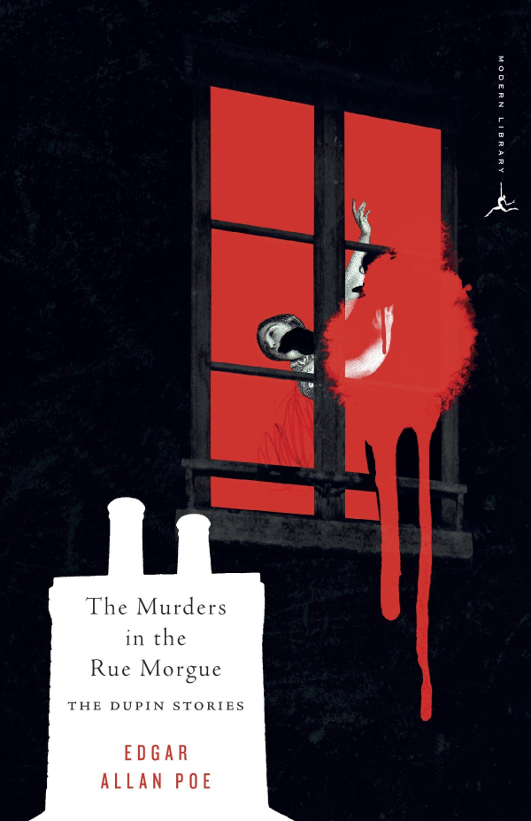

The Murders in the Rue Morgue
by Edgar Allan Poe
Poe's amateur detective, C. Auguste Dupin, takes an interest in the murder in Paris of two women. It was terribly brutal but difficult to categorize; there appeared to be no robbery or sexual assault, no obvious reason for the crimes. The newspapers carried sensational headlines. Dupin gets involved because the man arrested for the crimes, Monsieur Le Bon, had previously done him a favour. It becomes a challenge to Dupin.